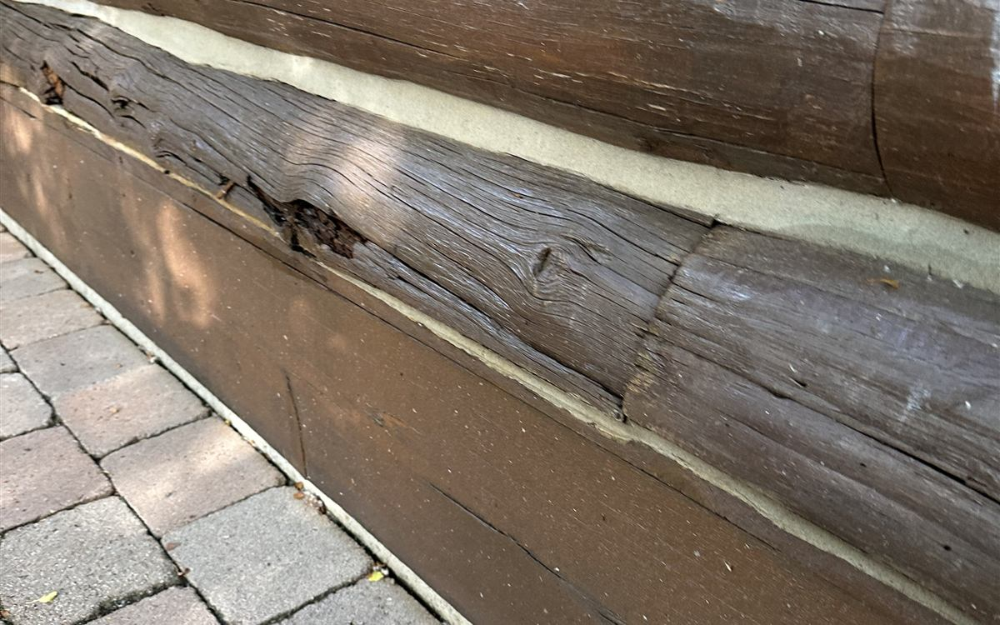

Walk into any paint store and you will find log home stains in two big families: oil-based and water-based. Both can protect a log home. They just do it in different ways, they fail in different ways, and they do not mix well with each other. Here is how they compare, and what we look at when we choose a stain for a log home staining job in the Wood River Valley.

Oil-based log stain
Oil-based stains (often called penetrating oils or alkyd stains) soak into the wood instead of forming a film on top of it. The pigment and resin sit inside the outer layer of the log.
- How it looks: rich and natural. It deepens the wood grain, and it does not look like a coating.
- How it fails: gradually. It fades and dries out from the surface down, without peeling. That makes maintenance coats simple: clean the logs and apply another coat.
- The trade-off: it typically needs re-coating more often, especially on sunny walls, and some oil-based products can feed mildew in damp, shaded spots.
Water-based log stain
Water-based stains, usually acrylic, form a flexible film on the surface of the logs. Many are sold as systems: a color coat plus a clear topcoat.
- How it looks: even color with a slight sheen, depending on the topcoat.
- How it fails: when the film reaches the end of its life, it can crack or peel instead of fading evenly. Caught early, a maintenance topcoat resets the clock. Left too long, peeling film has to be stripped.
- The trade-off: a good water-based system often lasts longer between coats, and it is easier to clean up and lower in odor. But surface prep has to be right, because a film stain is only as good as its bond to the wood.
Brands you will run into
On log homes in Idaho you will see names like Sashco (Capture and Cascade), Perma-Chink (Lifeline), Sikkens (Cetol Log & Siding), and penetrating oils like Q8 Log Oil. Each brand has its own system and its own rules about what can go over what. The product matters, but in our experience the prep and the application matter more.
Why you cannot just switch
This is the part most homeowners do not hear until it is too late: oil-based and water-based stains are generally not compatible over each other. A water-based film will not bond reliably over an oil that is still in the wood, and an oil cannot soak into wood sealed under an acrylic film. Switching from one family to the other usually means stripping the old finish back to bare wood first. On a whole house, media blasting is usually the cleanest way to do that.
What holds up in Idaho
At Wood River Valley elevation, UV exposure is much stronger than at sea level, and log walls go through hard freeze-thaw cycles all winter. Three things matter more than the oil-vs-water question:
- Pigment. Clear and very light stains have little UV protection, and they gray fast at altitude. A pigmented stain protects the wood much longer.
- Exposure. South and west walls take the most sun and fail first. They may need a maintenance coat years before the north side does.
- Maintenance. Either family lasts far longer when it gets a maintenance coat on time, before it fails. Our guide to the signs your log home needs re-staining covers when that is.
So which should you choose?
Start with what is on your logs now. If the existing finish is sound, stay in the same family and keep up with maintenance coats. If the finish has failed and the logs are being stripped anyway, that is the one time to choose fresh, based on the look you want and how much maintenance you want to do. Don't forget the joints, either: chinking materials have to be compatible with the stain system too.
Chase Construction stains and re-stains log homes in Sun Valley, Ketchum, Hailey, and Bellevue. Call 208-897-8100 and we will look at what is on your logs and tell you what will last.